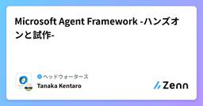
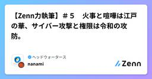
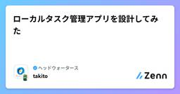

ヘッドウォータースのフィード
https://zenn.dev/p/headwaters
株式会社ヘッドウォータースのテックブログです。 AIエージェント、生成AI、Azure、GitHub Copilot、IoT、XR系などData&AIとApp modernizeに関して幅広く投稿します！
フィード

生成AIプロジェクトの95%が成果ゼロ。差を分けるのは「現場力」——会社を待たず個人で鍛える、この夏行きたい関東の博物館7選
ヘッドウォータースのフィード
はじめに生成AIを導入した企業の95%が、いまだに測定可能な成果を出せていません。MITメディアラボのProject NANDAが2025年7月に発表した「The GenAI Divide: State of AI in Business 2025」による調査結果です。Forbesの解説記事も参照してください。原因はモデルの性能ではありません。既存の業務フロー・レガシーシステム・組織の意思決定プロセスへの統合の弱さにあると報告されています。この数字を裏付けるように、2026年、OpenAIが企業向けのAI導入を専門に行う組織を立ち上げました。AnthropicもBlackston...
1日前

Microsoft Agent Framework -ハンズオンと試作-
ヘッドウォータースのフィード
執筆日2026/08/05 はじめにMicrosoft Agent Frameworkの理解を進めよう！というところでMicrosoftのチュートリアルをベースにハンズオンといろいろ遊んでみました。 偉大なる先人のみなさんhttps://zenn.dev/headwaters/articles/d46d821dff0aa2https://zenn.dev/headwaters/articles/4bf7d7b6cf1ce4 参考資料https://learn.microsoft.com/ja-jp/agent-framework/get-started/ 前...
3日前

【スライド作成一本勝負】M365 Copilot Cowork・Claude Cowork・ChatGPT Workを比較してみた
ヘッドウォータースのフィード
Microsoft、Anthropic、OpenAIが提供するAIエージェントに、まったく同じプロンプトでスライド作成を依頼しました。比較したのは、以下の3つです。M365 Copilot CoworkClaude CoworkChatGPT Workなお、M365 Copilot Coworkについては、モデル選択による違いも確認するため、「自動」とGPT-5.6 Solの2条件で実行しました。単にスライドを生成できるかではなく、デザイン性、指示の遵守、顧客向け資料としての完成度、生成スピード、コストまで比較します。 比較条件 使用したプロンプト詳細な指示を与...
3日前

『汎用AIがあるのになぜ機械学習を学ぶのか』を図解と実践で理解する
ヘッドウォータースのフィード
はじめに汎用AIとビジネス課題を解決する設計を組み合わせる仕事をする中で、深く込み入った課題には機械学習の知識が必要だと感じてきました。そこでエンジニアとしての技術力を高めるため、機械学習の知識をバージョンアップすることにしました。学習済みモデルを触り始めると、こんな疑問にもぶつかります。モデルって結局何が入っているの？返ってくる数値って何を意味しているの？精度を上げるには何をいじればいいの？想定読者は、実装経験はあるけど機械学習は初めてという方です。この記事では「なぜ学ぶ意義があるのか」から「実際の仕組み」まで図解メインで整理します。今回は実務に近い「欠損値」や「カ...
4日前

【VSCode】MCPサーバの停止方法
ヘッドウォータースのフィード
VSCodeにてMCPサーバの停止方法で詰まったので、記事に残します。 1. ctrl + shift + P → mcpで検索する 2.「サーバーの一覧表示」を選択し、任意のMCPサーバを選択 3. 「サーバーの停止」を選択 停止される
4日前

【Zenn力執筆】＃５ 火事と喧嘩は江戸の華、サイバー攻撃と権限は令和の攻防。
ヘッドウォータースのフィード
はじめに♬ かじだ かじだ おおかじだ！まっかっかのおおかじだ！けがにん たくさん でたそうだ！子どもの頃に読んだ『からすのパンやさん』における、ゴロベエどんの勘違いから生まれた嘘火事のシーンは、今でも覚えている印象的なシーンです。参考: からすのパンやさん - 偕成社絵本における火事はゴロベエどんの勘違いでしたが、現実世界で火事が発生したら、一番怖いことは何でしょうか。自分の家が燃えてしまうことでしょうか。もちろん、それも大きな被害です。しかし、よりマクロな視点で考えてみてください。本当に怖いのは、その火が隣の家へ燃え移り、さらに街全体へ広がってしまうことでは...
4日前

ChatGPT Sitesは『作る』だけでなく『公開』まで終わらせてくれる
ヘッドウォータースのフィード
はじめに生成AIを使えば、TodoアプリのようなシンプルなWebアプリはかなり簡単に作れるようになりました。しかし、コードが完成しても、それだけではブラウザから使えるWebサービスにはなりません。ホスティング先を決め、ビルドやデプロイを設定し、公開URLを用意する必要があります。今回ChatGPT Sitesを使ってみて強く感じたのは、AIによるアプリ作成だけでなく、この「公開までの最後のひと手間」まで完結することでした。この記事では、Todoアプリの細かな実装ではなく、ChatGPT Sitesの機能と、作ったアプリをすぐ使える状態にできる利便性を中心に紹介します。こ...
5日前

Teamsから直接Databricksカタログにアクセスする
ヘッドウォータースのフィード
DatabricksをTeams上で利用できる！Microsoft Teams上でDatabricks Genieを直接利用できるようになりました。設定手順は以下Microsoft Learnにまとまってます。機能の有効化など数分程度でできました。弊社のDatabricks環境もさっそくTeamsに追加してみました。https://learn.microsoft.com/ja-jp/azure/databricks/integrations/msft-teamsアプリストアにもDatabricks Genieが！ Teamsアプリバーに追加する設定を行うと、Teams...
6日前

Microsoft Agent Framework - 宣言型エージェント（Declarative Agents）を検証する
ヘッドウォータースのフィード
執筆日2026/8/1 やることMicrosoft Agent Framework では、YAMLでWorkflowを定義することで、コードを書かずにマルチエージェントのオーケストレーションや分岐・ループを構築できます。どんな書き方ができるのか、単純なものから少し複雑なものまで順番に検証していきます。https://learn.microsoft.com/ja-jp/agent-framework/workflows/declarativehttps://learn.microsoft.com/ja-jp/agent-framework/agents/declarati...
6日前

ローカルタスク管理アプリを設計してみた 6
6
ヘッドウォータースのフィード
背景今まではタスクは自分の頭で整理するか、メモ帳のようなものに書き留めていました。それくらいの管理で十分でした。しかし最近、案件業務・社内業務とタスクが増え、整理していかないと厳しい状態になってきました。 課題課題なのが、私自身タスク管理というものが苦手ということ。アプリを開いたり記入したりするのが面倒になりがちで、何かにメモしておこうとしてもベタ書き（用件だけ書いて締め切りなどは書かない、など）になってしまいがちです。 解決策これを解決するために、音声入力 + 文章整形 + 保存ができれば良いのではないかと思いました。そこで今回取り入れたのが Claude Co...
8日前

App ServiceにAcrPull権限を付与する
ヘッドウォータースのフィード
はじめにAzure Container Registry (ACR) に保存されたコンテナイメージへアクセスする際、Azureでは Azure RBAC を利用した権限管理を行うことができます。AcrPull は、ACRからコンテナイメージを取得するためのロールです。例えば、Azure App Service や Azure Container Apps、AKS などがACRからコンテナイメージを取得する際には、対象のリソースにAcrPullロールを付与する構成がよく利用されます。本記事では、ユーザー割り当てマネージドIDを利用して App Service に AcrPull...
9日前
DockerコンテナをApp Serviceへ簡易デプロイする手順
ヘッドウォータースのフィード
はじめに個人開発や小規模プロジェクトでは、GitHub ActionsなどのCI/CDを導入せずに、DockerイメージをAzure Container Registry (ACR) にPushし、Azure App Serviceへデプロイするケースがあります。本記事では、実際に運用している簡易手順をベースに、Dockerイメージ作成Azure Container RegistryへのPushApp Serviceへの反映までの流れをまとめます。構成は以下のイメージです。ローカル環境 ↓Dockerイメージ作成 ↓Azure Containe...
9日前
【Zenn力執筆】＃４ AからZまで耳をかっぽじって聞け！ 文系未経験のAZ-900合格体験記
ヘッドウォータースのフィード
2026年7月25日、AZ-900（Microsoft Azure Fundamentals）に728点で合格しました。学習開始時のAzure知識はゼロです。正直な第一印象は、Azure？なんだそれは。おいしいものなのか。というレベルでした。そんな状態から約1か月半学習し、なんとか合格ラインを突破することができました。この記事では、AZ-900を受験した理由実際の学習スケジュール使用した教材模擬試験の点数推移試験当日の感想合格して感じたことを紹介します。これからAZ-900を受験する方や、Azure学習を始めようとしている方の参考になれば幸いです。...
10日前
Azure AI Search - セキュリティフィルターを試す
ヘッドウォータースのフィード
執筆日2026/7/29 はじめにAzure AI Search で全社的な検索アプリを作ると、「このユーザ/セキュリティグループにはこのドキュメントだけ見せたい/見せたくない」というアクセス制御が必ず必要になるかなと。その際にAzure AI Searchが提供しているのが、セキュリティフィルターです。ドキュメントに「アクセスできるユーザー・グループID の一覧」を持たせておき、クエリ時に search.in 関数でフィルタリングすることで、ドキュメントレベルのアクセス制御ができます。 参考資料https://learn.microsoft.com/ja-jp/a...
11日前
Fabric容量に対してのSparkのノードサイズが要因セッションエラー
ヘッドウォータースのフィード
問題点と結論Microsoft Fabric Notebookでセッション接続エラーが出る場合、Fabric F2容量に対してSparkプールのノードサイズがMediumになっていることが原因になる場合があります。今回の環境では、ワークスペースのSparkプールがMediumになっていたため、Notebookのセッション接続に失敗していました。この問題は、Smallの新しいSparkプールを作成し、そのプールをNotebookで利用することで解決できました。対応前:- Capacity: Fabric F2- Spark pool node size: Medium対...
12日前
Microsoft Fabricの「グラフモデル」のユースケース
ヘッドウォータースのフィード
Fabricの「グラフモデル」とは2026年3月にMicrosoft Fabricのアイテム｢グラフモデル｣がGAになりました。どんな仕様でどんな業務で使えるのか、Lakehouseやセマンティックモデル、Ontologyと何が違うのかを見てみます。https://learn.microsoft.com/ja-jp/fabric/graph/overviewhttps://community.fabric.microsoft.com/t5/Fabric-Updates-Blog/Graph-in-Fabric-Generally-Available/ba-p/5190748本...
13日前
EntraIDでグループを作成する
ヘッドウォータースのフィード
執筆日2026/7/26 参考Docshttps://learn.microsoft.com/ja-jp/entra/fundamentals/how-to-manage-groups 前提グループ管理者 or ユーザー管理者ロールが付与されていること 手順検索欄でEntraIDと検索し、Microsoft Entra IDをクリックする2. 管理>グループをクリックする3. 概要>新しいグループをクリック4. 以下のパラメータを入力するグループの種類:セキュリティ を選択グループ名：任意の名前を入力所有者：所有者を選択...
13日前
API Management でAI Gatewayのログを収集する方法
ヘッドウォータースのフィード
執筆日2026/7/25 参考Docshttps://learn.microsoft.com/ja-jp/azure/api-management/api-management-howto-llm-logs やることAPIMの診断設定からAI Gateway関連のログ（ApiManagementGatewayLlmLog）を Log Analyticsワークスペースに送れ、トークン使用量（prompt/completion/total）・使用モデル名を記録する。ポータルの Analytics ダッシュボードで、トークン消費や利用状況を可視化する。 前提Az...
15日前
【Zenn力執筆】＃３ シャットダウンではなく遮断措置？ 踏切の遮断機の目的とは
ヘッドウォータースのフィード
はじめにまずはこちらをご覧ください。BLACKPINKの『Shut Down』です。動画リンク:https://www.youtube.com/watch?v=POe9SOEKotk&list=RDPOe9SOEKotk&start_radio=1私は「シャットダウン」という言葉を聞くと、パソコンの電源オフを連想するのと同時に、この曲が思い浮かびます。特に『ラ・カンパネラ』をサンプリングしたイントロは、静けさを切り裂くような印象があります。さて。前回の記事では「不正アクセス」という言葉について考えました。<前回の記事：https://zenn....
15日前
Azure API Managementでモデルの call 数・token数を制限する
ヘッドウォータースのフィード
執筆日2026/7/23 やることAzure API Management（以下、APIM）のAI Gatewayについて勉強しています。前回、APIMを使ってMicrosoft Foundryのモデルをcallすることができました。今回は、そのcall数とtoken数を制限する方法を実装しようと思います。 前提Azure API Management BasicMicrosoft Foundryをデプロイ済みであること。以下記事「API Management経由でMicrosoft FoundryのモデルをCallする」を実装済みであること。https...
16日前